Two-dimensional histogram classification based on the max bin-per-bin pull with respect to a reference histogram
This notebook investigates a very simple classifier, that just looks at the maximum bin-per-bin value difference with respect to a given reference histogram.
### imports
# external modules
import sys
import os
import numpy as np
import matplotlib.pyplot as plt
import importlib
# local modules
sys.path.append('../utils')
import dataframe_utils as dfu
import plot_utils as pu
import hist_utils as hu
importlib.reload(dfu)
importlib.reload(pu)
importlib.reload(hu)
sys.path.append('../src')
import DataLoader
importlib.reload(DataLoader)
sys.path.append('../src/classifiers')
import MaxPullClassifier
importlib.reload(MaxPullClassifier)
<module 'MaxPullClassifier' from '/eos/home-l/llambrec/SWAN_projects/ML4DQM-DC/tutorials/../src/classifiers/MaxPullClassifier.py'>
Part 1: First exploration on a small test file
### load the histogram dataframe
histname = 'clusterposition_zphi_ontrack_PXLayer_1'
filename = 'DF2017B_'+histname+'_subset.csv'
datadir = '../data'
dloader = DataLoader.DataLoader()
df = dloader.get_dataframe_from_file( os.path.join(datadir, filename) )
print('raw input data shape: {}'.format( dfu.get_hist_values(df)[0].shape ))
# select DCS-bit on data
df = dfu.select_dcson(df)
print('number of selected lumisections: '+str(len(df)))
INFO in DataLoader.get_dataframe_from_file: loading dataframe from file ../data/DF2017B_clusterposition_zphi_ontrack_PXLayer_1_subset.csv...
INFO in DataLoader.get_dataframe_from_file: sorting the dataframe...
INFO in DataLoader.get_dataframe_from_file: loaded a dataframe with 627 rows and 13 columns.
raw input data shape: (627, 202, 302)
number of selected lumisections: 599
### extract the histograms as a numpy array from the dataframe
(histograms,runnbs,lsnbs) = dfu.get_hist_values(df)
print('shape of histogram array: {}'.format(histograms.shape))
print('shape of run number array: {}'.format(runnbs.shape))
print('shape of lumisection number array: {}'.format(lsnbs.shape))
### further preprocessing of the data (cropping, rebinning, normalizing)
histograms = hu.crophists(histograms,[slice(1,-1,None),slice(1,-1,None)]) # remove under- and overflow bins
histograms = hu.crophists(histograms,[slice(None,None,None),slice(80,220,None)]) # cut out uninteresting parts
histograms = hu.rebinhists(histograms,(5,5))
print('shape of histogram array: {}'.format(histograms.shape))
shape of histogram array: (599, 202, 302)
shape of run number array: (599,)
shape of lumisection number array: (599,)
shape of histogram array: (599, 40, 28)
### define a reference histogram as the average of the set
### and a max pull classifier based on this reference histogram
refhist = hu.averagehists( histograms, nout=1 )[0,:,:]
print('shape of averaged histogram: {}'.format(refhist.shape))
classifier = MaxPullClassifier.MaxPullClassifier()
classifier.train( np.array([refhist]) )
shape of averaged histogram: (40, 28)
### calculate max pull for each histogram
maxpulls = classifier.evaluate( histograms )
pu.plot_distance(maxpulls)
avg,std = pu.plot_distance(maxpulls,doplot=False)
print(avg)
print(std)
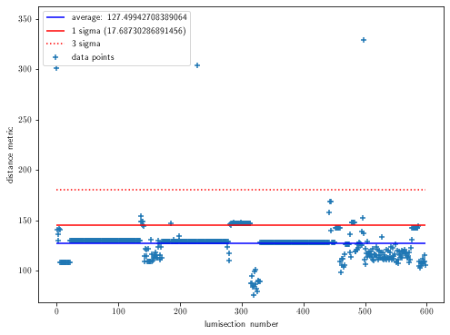
127.49942708389064
17.68730286891456
### plot examples for histograms with large pulls
threshold = avg+3*std
for i in range(len(histograms)):
if maxpulls[i] < threshold: continue
histlist = [histograms[i],classifier.refhist,classifier.getpull(histograms[i])]
subtitles = ['test histogram','reference histogram','pull']
pu.plot_hists_2d(histlist, ncols=3, title = None, subtitles=subtitles)
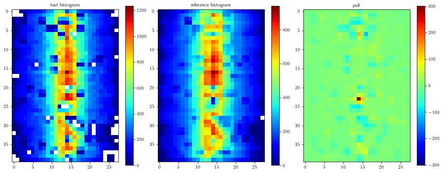
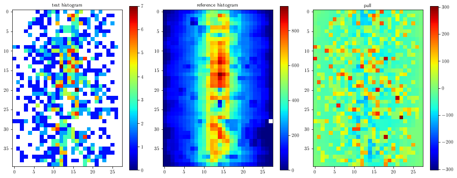
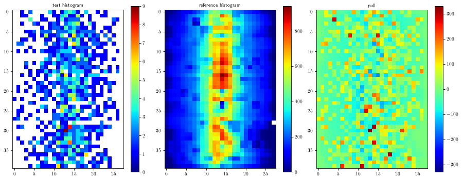
### plot examples of histograms with small pulls
inds = np.argsort(maxpulls)[:3]
for i in inds:
histlist = [histograms[i],classifier.refhist,classifier.getpull(histograms[i])]
subtitles = ['test histogram','reference histogram','pull']
pu.plot_hists_2d(histlist, ncols=3, title = None, subtitles=subtitles)

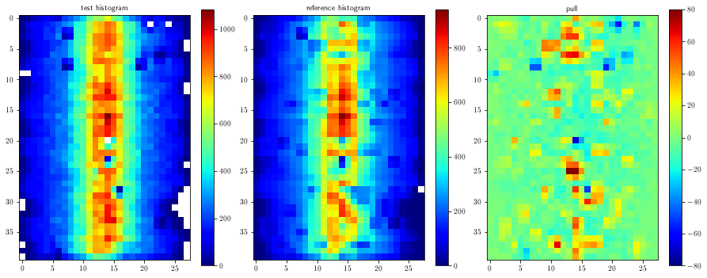
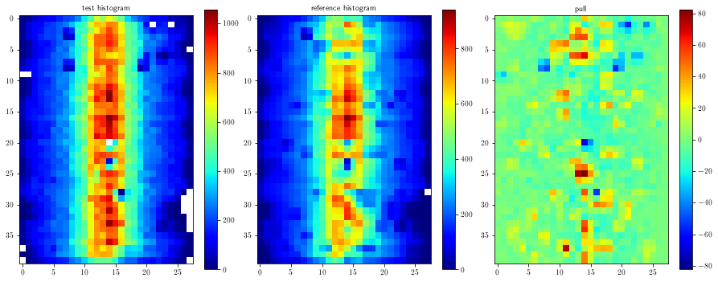
### investigate a particular lumisection in more detail
idx = 0
print('run: {}, lumisection: {}'.format(runnbs[idx],lsnbs[idx]))
print('maximum pull for this lumisection: {}'.format(maxpulls[idx]))
histlist = [histograms[idx],classifier.refhist,classifier.getpull(histograms[idx])]
subtitles = ['test histogram','reference histogram','pull']
_ = pu.plot_hists_2d( histlist, ncols=3, title = None, subtitles=subtitles)
run: 297050, lumisection: 1
maximum pull for this lumisection: 301.22227457594295

Part 2: Use a locally changing reference histogram
### local approach
nprev = 5
maxpulls = np.zeros(len(histograms))
classifiers = [None]*nprev
for i in range(nprev,len(histograms)):
hist = histograms[i]
refhist = hu.averagehists( histograms[i-nprev:i], nout=1 )[0,:,:]
classifier = MaxPullClassifier.MaxPullClassifier()
classifier.train( np.array([refhist]) )
classifiers.append(classifier)
maxpulls[i] = classifier.evaluate( np.array([hist]) )
pu.plot_distance(maxpulls)
avg,std = pu.plot_distance(maxpulls,doplot=False)
plt.show()
print('average pull: {}'.format(avg))
print('std dev of pulls: {}'.format(std))
# make plots of histograms with large local pulls
threshold = avg+3*std
print('histograms with largest pulls:')
for i in range(len(histograms)):
if maxpulls[i] < threshold: continue
histlist = [histograms[i],classifiers[i].refhist,classifiers[i].getpull(histograms[i])]
subtitles = ['test histogram','reference histogram','pull']
title = 'index: {}, run: {}, lumisection: {}, max pull: {}'.format(i, runnbs[i],lsnbs[i],maxpulls[i])
pu.plot_hists_2d(histlist, ncols=3, title = title, subtitles=subtitles)
plt.show()
# make plots of histograms with small local pulls
inds = np.argsort(maxpulls)[nprev:nprev+5]
print(inds)
print('histograms with smalles pulls:')
for i in inds:
histlist = [histograms[i],classifiers[i].refhist,classifiers[i].getpull(histograms[i])]
subtitles = ['test histogram','reference histogram','pull']
title = 'index: {}, run: {}, lumisection: {}, max pull: {}'.format(i, runnbs[i],lsnbs[i],maxpulls[i])
pu.plot_hists_2d(histlist, ncols=3, title = title, subtitles=subtitles)
plt.show()
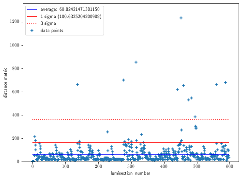
average pull: 60.82421471381158
std dev of pulls: 100.6325204200988
histograms with largest pulls:
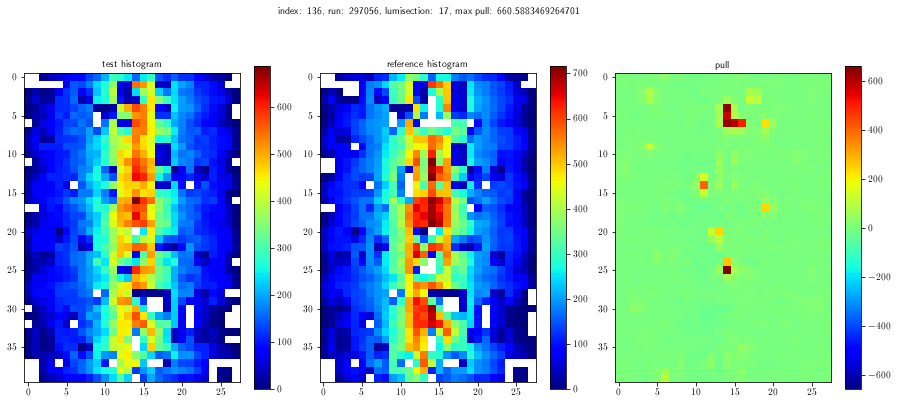
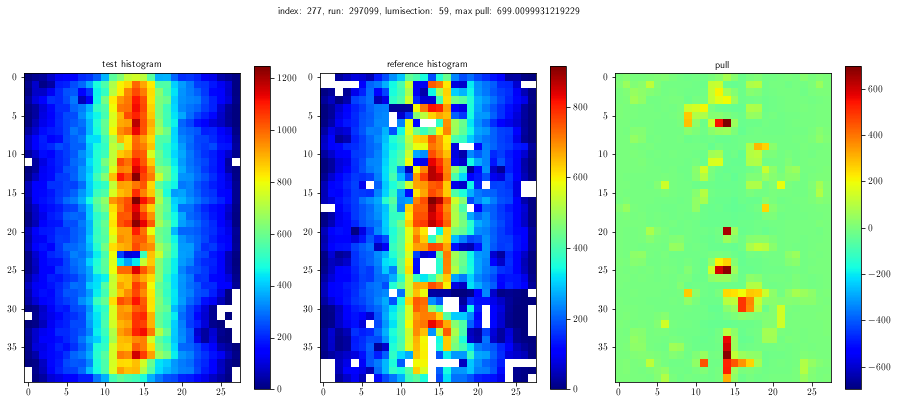
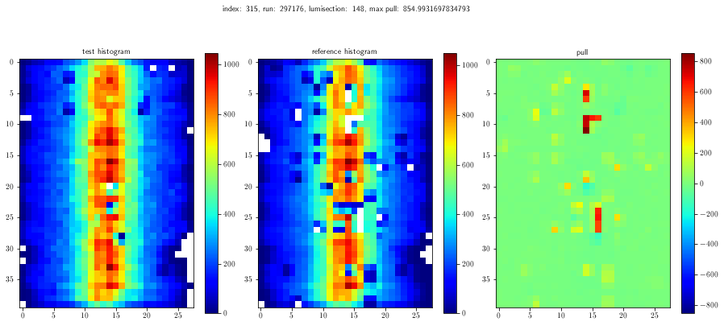
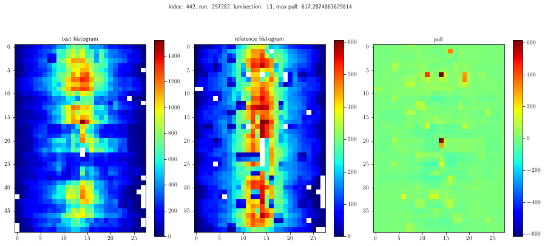
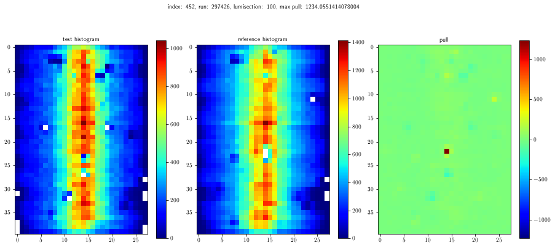
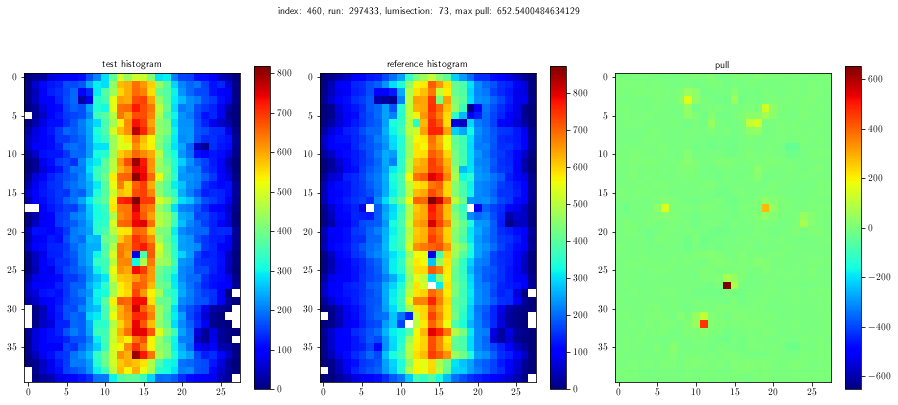
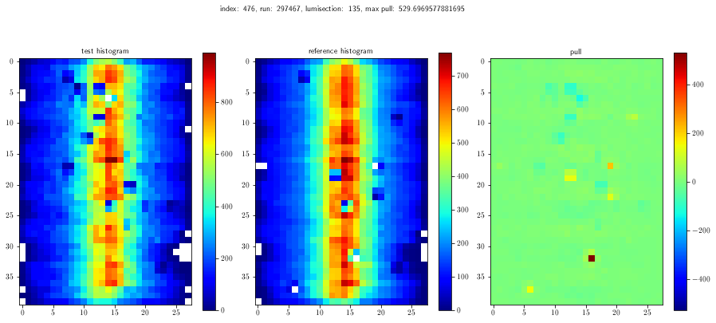
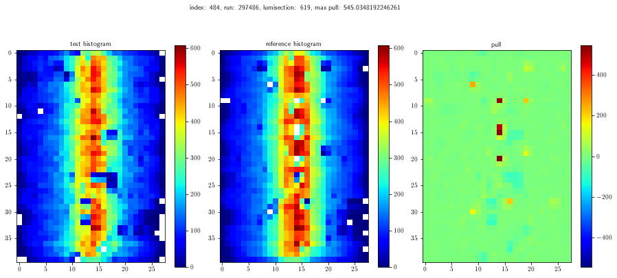
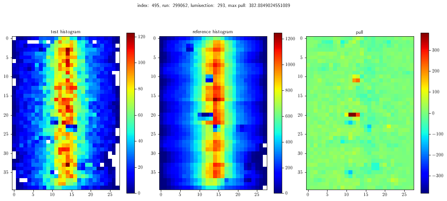
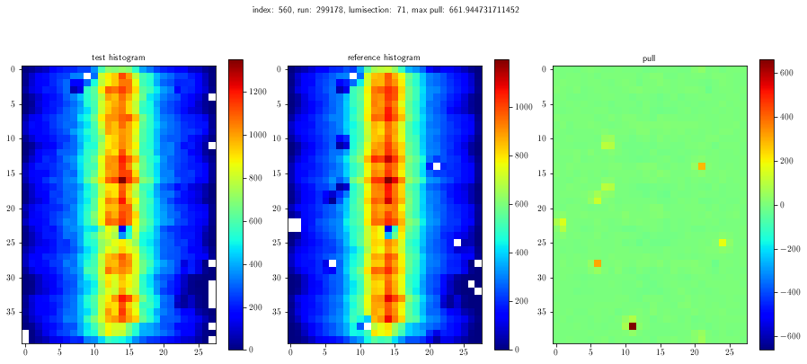
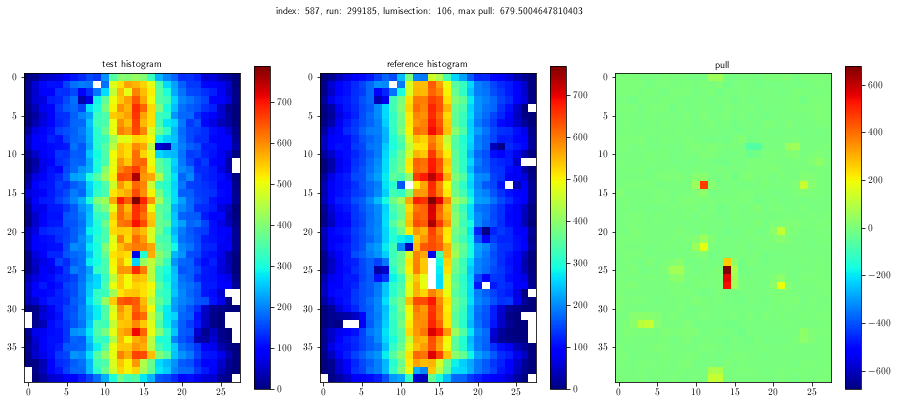
[232 482 233 591 126]
histograms with smalles pulls:
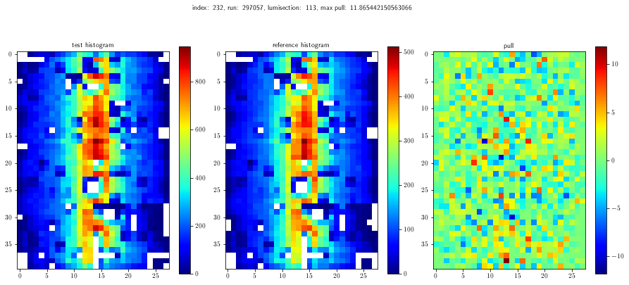
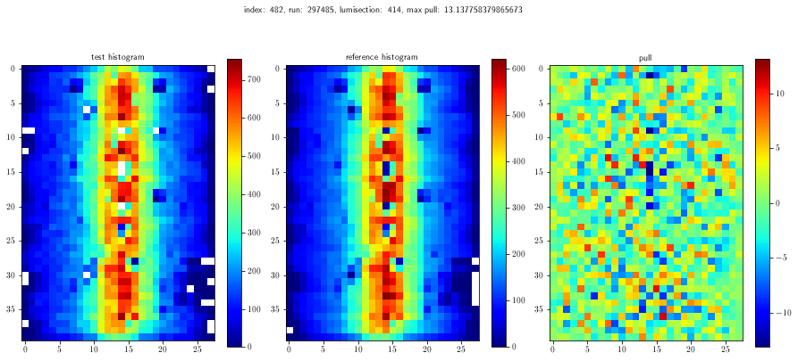
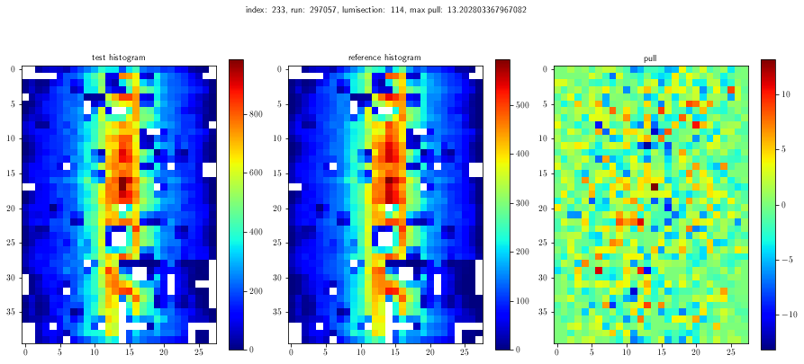
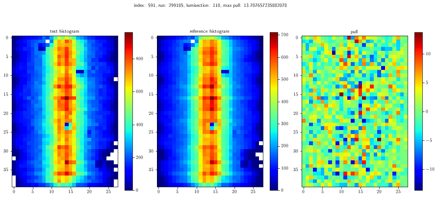
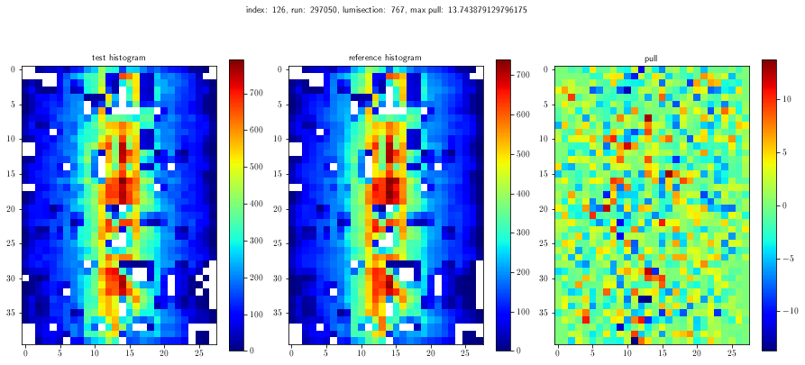
### investigate a particular lumisection in more detail
idx = 136
if idx < nprev:
raise Exception('ERROR: cannot plot index {} since classification is done based on {} previous lumisections'.format(idx,nprev))
print('run: {}, lumisection: {}'.format(runnbs[idx],lsnbs[idx]))
print('maximum pull for this lumisection: {}'.format(maxpulls[idx]))
histlist = [histograms[idx],classifiers[idx].refhist,classifiers[idx].getpull(histograms[idx])]
subtitles = ['test histogram','reference histogram','pull']
print('test histogram, reference histogram and pulls:')
_ = pu.plot_hists_2d( histlist, ncols=3, title = None, subtitles=subtitles)
plt.show()
print('histograms that were averaged to make the reference histograms:')
_ = pu.plot_hists_2d( histograms[idx-nprev:idx], ncols=3 )
run: 297056, lumisection: 17
maximum pull for this lumisection: 660.5883469264701
test histogram, reference histogram and pulls:
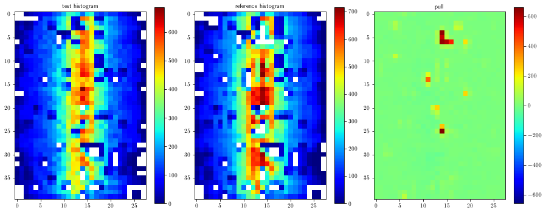
histograms that were averaged to make the reference histograms:
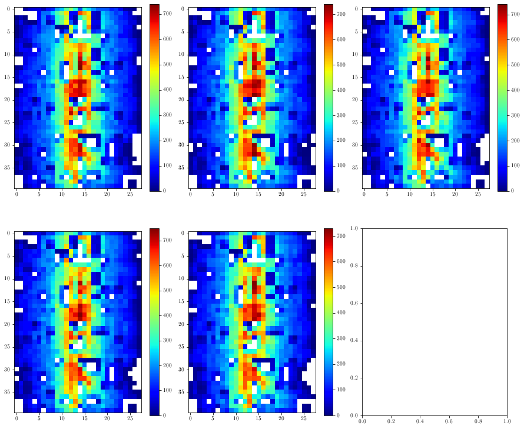
Part 3: Load a set of histograms to define a reference, a good test set and a bad test set, and test the discrimination
### load the histograms
histname = 'clusterposition_zphi_ontrack_PXLayer_1'
datadir = '../data'
dloader = DataLoader.DataLoader()
# load the training data and train the classifier
filename = dffile = 'DF2017B_'+histname+'_subset.csv'
df = dloader.get_dataframe_from_file( os.path.join(datadir, filename) )
print('raw input data shape: {}'.format( dfu.get_hist_values(df)[0].shape ))
df = dfu.select_dcson(df)
(hists_ref) = hu.preparedatafromdf(df, cropslices=[slice(1,-1,None),slice(81,221,None)], rebinningfactor=(2,2), donormalize=False, doplot=False)
_ = pu.plot_hists_2d(hists_ref[:4], ncols=4, title='some example histograms for averaging')
print('number of lumisections in histogram set for averaging: '+str(len(df)))
refhist = hu.averagehists( hists_ref, nout=1 )[0,:,:]
_ = pu.plot_hist_2d(refhist, title='averaged histogram (used as reference)')
print('shape of averaged histogram: {}'.format(refhist.shape))
classifier = MaxPullClassifier.MaxPullClassifier()
classifier.train( np.array([refhist]) )
# load the good data
filename = dffile = 'DF2017B_'+histname+'_run297056.csv'
df = dloader.get_dataframe_from_file( os.path.join(datadir, filename) )
print('raw input data shape: {}'.format( dfu.get_hist_values(df)[0].shape ))
df = dfu.select_dcson(df)
(hists_good, runnbs_good, lsnbs_good) = hu.preparedatafromdf(df, returnrunls=True, cropslices=[slice(1,-1,None),slice(81,221,None)], rebinningfactor=(2,2), donormalize=False, doplot=False)
_ = pu.plot_hists_2d(hists_good[:4], ncols=4, title='some example histograms in good test set')
print('number of lumisections in good test set: '+str(len(df)))
# load the bad data
filename = dffile = 'DF2017B_'+histname+'_run297289.csv'
df = dloader.get_dataframe_from_file( os.path.join(datadir, filename) )
print('raw input data shape: {}'.format( dfu.get_hist_values(df)[0].shape ))
df = dfu.select_dcson(df)
(hists_bad, runnbs_bad, lsnbs_bad) = hu.preparedatafromdf(df, returnrunls=True, cropslices=[slice(1,-1,None),slice(81,221,None)], rebinningfactor=(2,2), donormalize=False, doplot=False)
_ = pu.plot_hists_2d(hists_bad[:4], ncols=4, title='some example histograms in bad test set')
print('number of lumisections in bad test set: '+str(len(df)))
INFO in DataLoader.get_dataframe_from_file: loading dataframe from file ../data/DF2017B_clusterposition_zphi_ontrack_PXLayer_1_subset.csv...
INFO in DataLoader.get_dataframe_from_file: sorting the dataframe...
INFO in DataLoader.get_dataframe_from_file: loaded a dataframe with 627 rows and 13 columns.
raw input data shape: (627, 202, 302)
number of lumisections in histogram set for averaging: 599
shape of averaged histogram: (100, 70)
INFO in DataLoader.get_dataframe_from_file: loading dataframe from file ../data/DF2017B_clusterposition_zphi_ontrack_PXLayer_1_run297056.csv...
INFO in DataLoader.get_dataframe_from_file: sorting the dataframe...
INFO in DataLoader.get_dataframe_from_file: loaded a dataframe with 196 rows and 14 columns.
raw input data shape: (196, 202, 302)
number of lumisections in good test set: 185
INFO in DataLoader.get_dataframe_from_file: loading dataframe from file ../data/DF2017B_clusterposition_zphi_ontrack_PXLayer_1_run297289.csv...
INFO in DataLoader.get_dataframe_from_file: sorting the dataframe...
INFO in DataLoader.get_dataframe_from_file: loaded a dataframe with 15 rows and 14 columns.
raw input data shape: (15, 202, 302)
number of lumisections in bad test set: 15
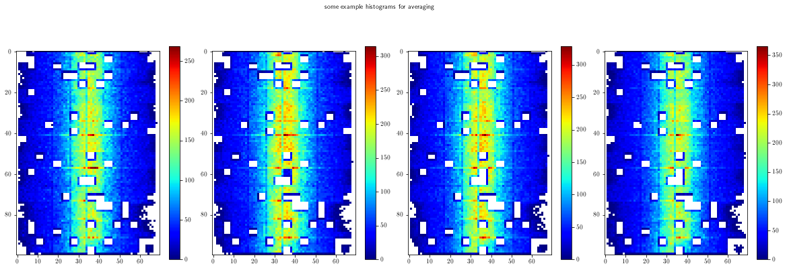
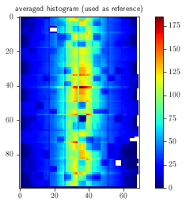
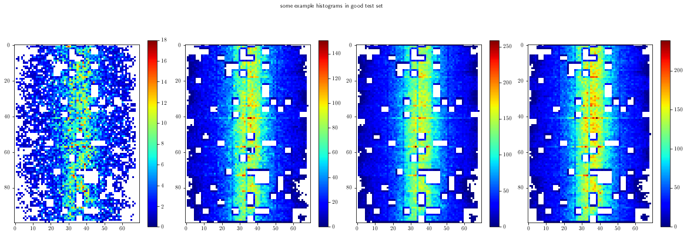

### perform the classification
scores_good = classifier.evaluate( hists_good )
labels_good = np.zeros(len(scores_good))
scores_bad = classifier.evaluate( hists_bad )
labels_bad = np.ones(len(scores_bad))
scores = np.concatenate((scores_good,scores_bad))
labels = np.concatenate((labels_good,labels_bad))
_ = pu.plot_score_dist( scores, labels, nbins=50, normalize=True,
siglabel='Anomalies', sigcolor='r',
bcklabel='Good histograms', bckcolor='g',
title='output score distributions for signal and background',
xaxtitle='output score', yaxtitle=None)

### check some examples
nplot = 5
inds_good = np.random.choice(np.array(list(range(len(hists_good)))),size=nplot)
print('example histograms from good test set:')
for i in inds_good:
histlist = [hists_good[i],classifier.refhist,classifier.getpull(hists_good[i])]
subtitles = ['good test histogram','reference histogram','pull']
title = 'index: {}, run: {}, lumisection: {}, max pull: {}'.format(i, runnbs_good[i],lsnbs_good[i],scores_good[i])
pu.plot_hists_2d(histlist, ncols=3, title = title, subtitles=subtitles)
plt.show()
inds_bad = np.random.choice(np.array(range(len(hists_bad))),size=nplot)
print('example histograms from bad test set:')
for i in inds_bad:
histlist = [hists_bad[i],classifier.refhist,classifier.getpull(hists_bad[i])]
subtitles = ['bad test histogram','reference histogram','pull']
title = 'index: {}, run: {}, lumisection: {}, max pull: {}'.format(i, runnbs_bad[i],lsnbs_bad[i],scores_bad[i])
pu.plot_hists_2d(histlist, ncols=3, title = title, subtitles=subtitles)
plt.show()
example histograms from good test set:
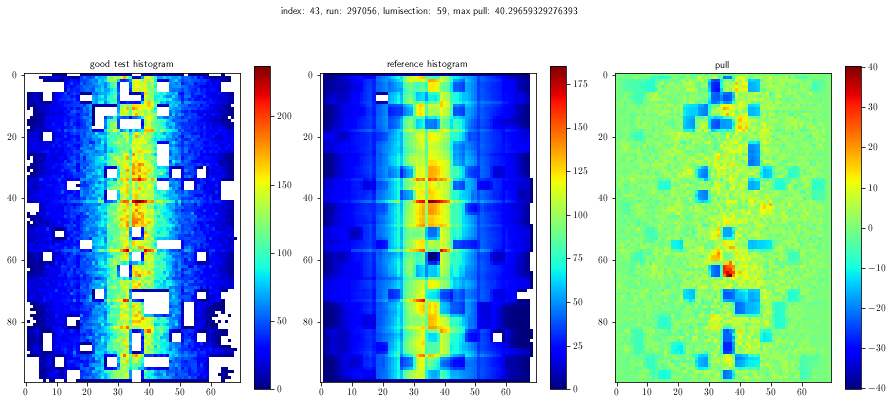
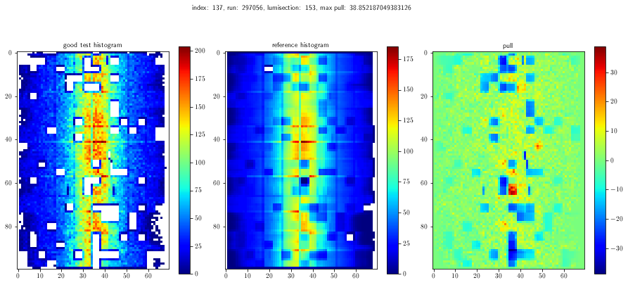

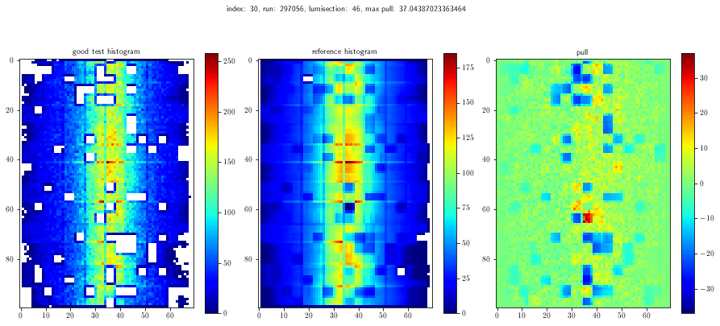
example histograms from bad test set:
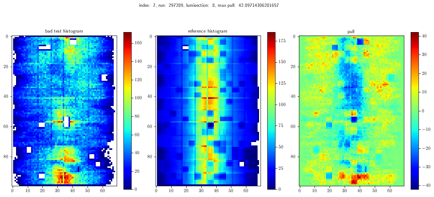

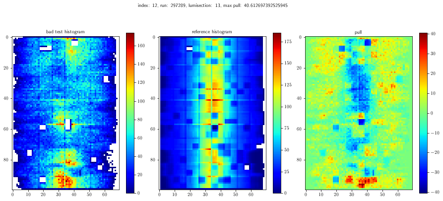
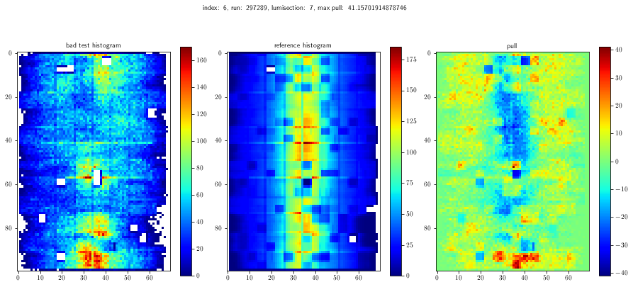
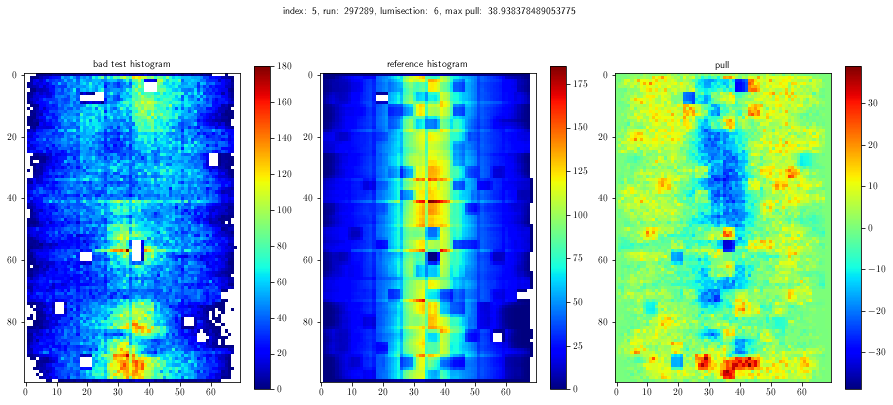
### re-define the classifier with a nondefault number of maximum pull bins to consider in a loop to determine the optimal value
ns = [1,10,20,50,100,500]
for n in ns:
classifier.set_nmaxpulls( n )
scores_good = classifier.evaluate( hists_good )
labels_good = np.zeros(len(scores_good))
scores_bad = classifier.evaluate( hists_bad )
labels_bad = np.ones(len(scores_bad))
scores = np.concatenate((scores_good,scores_bad))
labels = np.concatenate((labels_good,labels_bad))
_ = pu.plot_score_dist( scores, labels, nbins=50, normalize=True,
siglabel='Anomalies', sigcolor='r',
bcklabel='Good histograms', bckcolor='g',
title='output score distributions for signal and background',
xaxtitle='output score', yaxtitle=None)
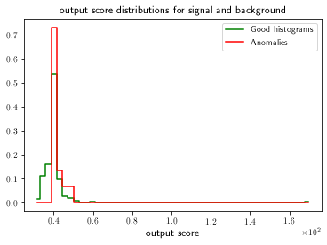
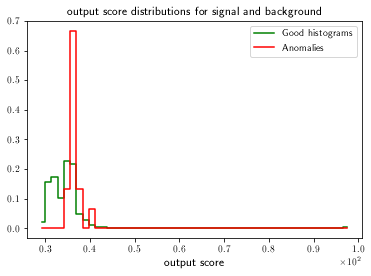
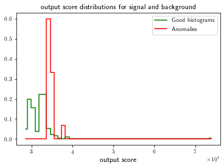

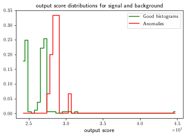
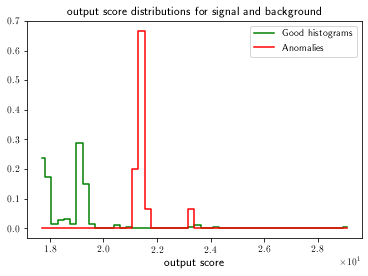